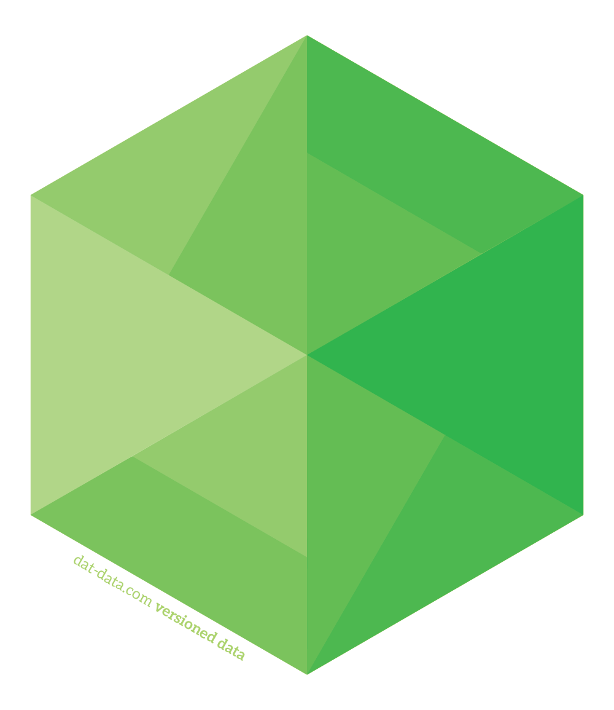

TGAC - AllBio 2014
Who
Phd Student @ 
Bioinformatics and Population Genomics
Supervisor:
Yannick Wurm | @yannick__
© 2014 Bruno Vieira CC-BY 4.0
Before
2004-2009

Master in Human Biology and Environment
Licentiate in Cell Biology and Biotechnology
2009-2013

Bioinformatician and SysAdmin
2012-2013
 Full Stack Web Developer - Built everything with
Full Stack Web Developer - Built everything with
Node.js, Express.js, Bootstrap, MongoDB and Redis
2013  Full Stack Web Developer - Worked on integration
Full Stack Web Developer - Worked on integration
with LinkedIn API
What
Bionode.io - Modular and universal bioinformatics

Pipeable UNIX command line tools and JavaScript / Node.js APIs for bioinformatic analysis workflows on the server and browser.
Collaborates with BioJS - Represent biological data on the web
 Dat - Build data pipelines
Provides a streaming interface between every file format and data storage backend. "git for data"
Why Bionode / Node.js?
- Reusable, small and tested modules
- Same language everywhere (JavaScript)
- JavaScript is fast enough
- Package Manager that works (NPM)
- Huge number modules (93327, 199/day)
- Use other JS projects (Dat, BioJS, NoFlo)
- Streams applies well to Bioinformatics
- Easy to write CLI wrappers for Streams
- Possible to write Desktop GUI apps in JS